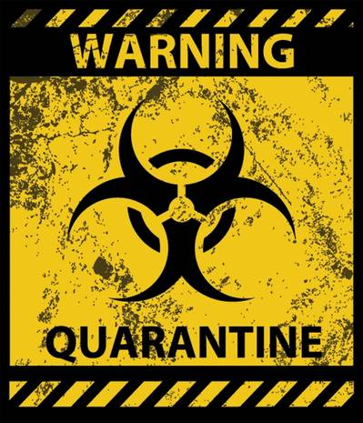

Home
About Us
Solutions
Contact info
Our Solution
Question:
How might we find an ultimate cure to
spread the desease of Ebola?
Theory-If we can find out what bats have in their DNA that protects them from showing harmful ebola symptoms, then put that key factor into a human's DNA, humans will be immune to ebola as well.
The Process Behind Our Prototype

After many disagreements and complications, our team
finally came to a solid conclusion. Initally, we started with a
whole other idea. Then, we realized many factors that would
come into role and decided that we needed to adjust some
things. Concludingly, we decided that we were going to do
something extrodinary; we decided to find a method to
theoretically find a cure to the ebola virus.
The current solution is nothing. By that, we mean there is no
cure. Our protype is a method to finding a cure. If all goes right,
eventually we will have discovered the cure for the ebola virus.
When an ebloa outbreak occurs today in day, thoes who are
infected are quarentined. this process is very isolatingf and
emotionally depressing for the victim. If we can proceed with
our "cure", this will no longer be the case. We can vaccinate
the majority of a comunity to create herd immunity.
Description of Prototype
Our prototype consists of a small dart that is shot from a rifle
which sticks into a bat eventually falling off. Bats, spicifically
fruit bats are the main carriers of ebola. therefore, fruit bats are
the main targets. Then, that dart will have a chip which sends
the animal's DNA to a program that the scientist have installed
in their computer system. Ultimately, they will be able to see
all the amino acid break downs and through research, discover
which protein that animal has that prevents it from showing
harmful symptoms of ebola. After testing, by inserting the
different proteins in other animals and finding which protein
prevents harmful symptoms. Theoretically, if we give that key
protein into a human's DNA through vaccination, they too will
show no harmful symptoms. In other words, they will be safe.